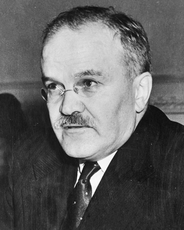
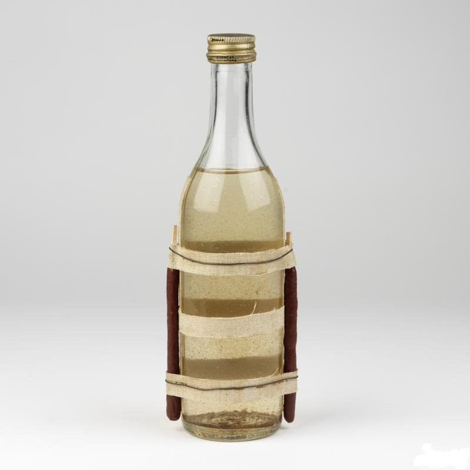

Zbraně připomínající Molotovův koktejl se prvně oběvují ve Španělksé občanské válce.
Tyto zbraně nejsou dobře zdokumentované a byly uchovávany v zavařeninovývh sklenicích než v lahvích podle
kterých je zbraň známá dens.
Molotův kokteijl vznikl roku. 1939 ve Finsku při válce proti SSSR. Protože Finská armáda neměla dostatečné zdroje na poražení Sovětské armády takže Finská armáda používala co nejlevnější taktiky, jako třeba používání klád na zastavení tanků. Nedostatčné vybavení proti velkému množství sovětských tanků dalo za vznik snad nejefektivnější zbrani v poměru cenna výkon v moderních časech.
Jméno Molotovův koktejl odkazuje na sovětského ministra zahraničí Vjačeslava Michajloviče Molotova jako urážka/odpověď finnů na pokus zakrýt invazi Finska tím že sovětské bombardéry létající nad finskem rozmisťují zásoby jídla a né bomby, takže finové pojmenovali svou novou zbraň Molotovův koktejl.
Zbraň před tím sloužila jako oslepující, nebo jako omračující pro posádku tanku, aby koupila čas na použití
trhavin proti tanku.
Ale Finská armáda měla nápad na použití Molotvového koktejlu k vyřazení tanků pomocí vržení zbraně do motorové
sekce tanku.
Díky této taktice se stal Molotovův koktejl nejlevnější proti-tankovou zbraní 2. světové války a
pomohla zničit více než 3000 tanků.
Molotův koktejl se skládá z rozbitelného obalu (např:skol) zápalné směsi a "doutnáku"(jaký koliv hořlavý materiál) přidělanému k obalu.
Za války bylo vyrobeno vice než 500 000 Molovových koktejlů a jednim nejznámějším výrobcem byl za 2. světové války dnes známy výrobce vodky.